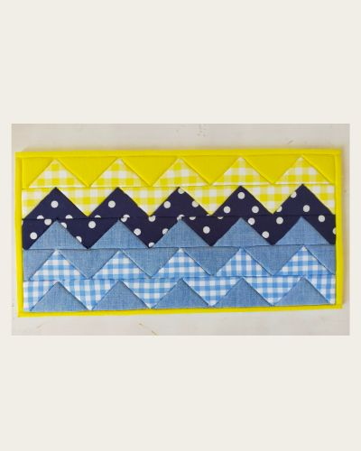

「シェブロン」
作品サイズ： 315mm × 170mm
今回のデザインは、すべて直角三角形のみで構成。
こちらはシェブロンと呼ばれていて、直角三角形だけでできているパターンです。
布の配置によって、山型のキザキザ模様が浮かび上がり、おもしろい柄ができあがります。
私はこの模様から波を連想し、夏の海を想いうかべながら作品をつくりました。

作品のつくり方については、momenブログ「100円ショップのフォトフレームに入る、きめこみパッチワークのボードをつくる方法」をご覧ください